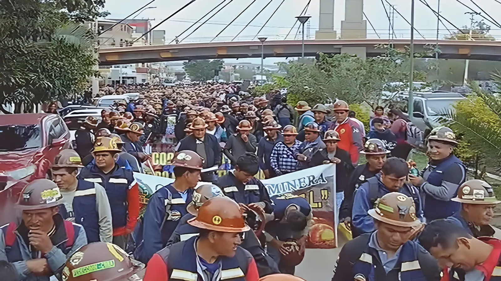

Moins de six mois après son investiture, le président de centre-droit Rodrigo Paz fait face à la plus grave crise sociale qu'ait connue la Bolivie depuis des décennies. Mineurs à la dynamite, paysannes indigènes en marche, syndicats en grève illimitée : la contestation qui secoue le pays depuis le début du mois de mai 2026 dépasse la simple protestation pour prendre les allures d'une insurrection populaire.
Lorsque Rodrigo Paz, sénateur centriste du Parti démocrate-chrétien, remporte le second tour de l'élection présidentielle le 19 octobre 2025 avec 54,6 % des suffrages, il hérite d'une situation économique explosive. Vingt ans de gouvernance de gauche — d'abord sous Evo Morales (2006–2019) puis sous Luis Arce (2020–2025) — ont laissé un pays aux réserves de change effondrées, dépendant d'hydrocarbures en déclin et confronté à sa pire crise économique depuis quatre décennies.
Paz se présente comme une figure alternative, capable de rassembler au-delà des clivages traditionnels. Il séduit une partie de l'électorat MAS lassé des querelles internes entre Morales et Arce, et bénéficie du soutien de l'homme d'affaires Samuel Doria Medina, arrivé troisième au premier tour. Mais il prend ses fonctions le 8 novembre 2025 sans majorité absolue au Parlement — son parti n'y détenant que 49 des 130 sièges à la Chambre des députés — et face à une crise économique qui n'attend pas.
La première mesure emblématique du gouvernement Paz est la suppression des subventions aux carburants, actée par le décret 5503 en décembre 2025. Cette décision, baptisée « gasolinazo » par ses détracteurs, a de fait doublé les prix de l'essence et du diesel en quelques semaines. Le gouvernement arguait d'une nécessité budgétaire absolue : les subventions aux hydrocarbures représentaient plus de 2 milliards de dollars annuels, un fardeau insoutenable pour un État aux caisses vides. Un premier mouvement de protestation est immédiatement apparu en décembre 2025, piloté par la Centrale ouvrière bolivienne (COB). Il recule temporairement après des concessions gouvernementales.
Mais un nouveau scandale ravive la colère au printemps 2026 : l'État importe de l'essence de mauvaise qualité, qui endommage les moteurs de véhicules et de machines agricoles. Le « scandale de l'essence frelatée » provoque la démission de deux hauts responsables de la compagnie pétrolière publique YPFB et fait basculer les transporteurs dans le camp de la contestation — un secteur stratégique dans un pays à géographie contraignante comme la Bolivie.
Investiture de Rodrigo Paz. Il succède à Luis Arce et met fin à vingt ans de gouvernance socialiste. Premières mesures d'austérité annoncées, dont la fin des subventions aux carburants.
Le « gasolinazo » (décret 5503) double les prix du carburant. La COB lance une grève illimitée dès le 22 décembre. Des milliers de mineurs marchent sur la place Murillo à La Paz. Le gouvernement cède partiellement.
La COB lance une nouvelle grève illimitée à l'occasion de la Fête du Travail. Les revendications portent sur les salaires, les privatisations, les investissements dans les communautés indigènes et l'arrêt de la réforme agraire.
Les barrages routiers se multiplient. Enseignants et transporteurs rejoignent le mouvement. Premières pénuries de nourriture, médicaments et essence à La Paz et El Alto. Une loi autorisant l'hypothèque des terres agricoles met le feu aux poudres chez les paysans.
Face à la pression, Paz annule la loi sur l'hypothèque agricole. Mais les manifestants ne s'arrêtent pas : le mot d'ordre passe désormais à la démission du président.
Les mineurs font exploser des bâtons de dynamite dans les rues de La Paz. Des tentatives d'assaut du palais présidentiel ont lieu. La police riposte aux gaz lacrymogènes. Au moins 90 personnes sont arrêtées.
Evo Morales conduit une marche de 190 kilomètres jusqu'à La Paz, rejoignant des milliers de manifestants dans la capitale. Il qualifie la mobilisation de « rébellion contre l'État néocolonial ».
Le Parlement abroge la loi limitant les pouvoirs d'exception du président, lui ouvrant la voie à l'état d'urgence. Paz avertit que la crise « approche du point de rupture ».
Le mouvement qui secoue la Bolivie en mai 2026 est remarquable par son ampleur et sa diversité. À son avant-garde, la Centrale ouvrière bolivienne (COB), principal syndicat du pays, qui a déclenché la grève illimitée le 1er mai. Autour d'elle se sont agrégés les syndicats de mineurs — armés de leur dynamite traditionnelle, héritage de décennies de luttes —, les organisations paysannes et indigènes d'El Alto, les enseignants des zones urbaines et rurales, ainsi que les fédérations de transporteurs.
El Alto, ville de près d'un million d'habitants accrochée au-dessus de La Paz, à majorité aymara et bastion historique des révoltes populaires — c'est de là qu'est partie la « Guerre du gaz » de 2003 qui a renversé Gonzalo Sánchez de Lozada —, est redevenue le cœur battant de la contestation. Des milliers de femmes paysannes indigènes, brandissant des drapeaux wiphala aux couleurs arc-en-ciel, ont défilé dans les rues de La Paz à l'occasion de la fête des Mères le 27 mai.
Les exigences du mouvement combinent des demandes immédiates et des enjeux structurels. Sur le plan immédiat : le rétablissement des subventions aux carburants, la réparation des véhicules endommagés par l'essence frelatée importée par l'État, et des augmentations de salaires face à l'inflation. Sur le fond : l'abandon des privatisations d'entreprises publiques, la défense des conventions collectives, le maintien des investissements dans les communautés indigènes, et le contrôle des réserves de devises par l'État.
À mesure que la crise s'intensifie, la revendication centrale devient la démission de Rodrigo Paz. Les manifestants et leurs organisations dénoncent un gouvernement perçu comme « totalement soumis aux États-Unis » — Washington a exprimé son soutien à Paz et mis en garde contre une tentative de « coup d'État » —, qui sacrifierait la souveraineté économique du pays sur l'autel des marchés financiers internationaux et du FMI.
« C'est un gouvernement totalement soumis. Je me rends compte que l'heure est venue de décider qui commande : l'empire ou le peuple. »
— Evo Morales, AFP, 28 mai 2026« Le pays a besoin d'ordre. Le temps est compté. »
— Rodrigo Paz, conférence de presse, 28 mai 2026Au 21 mai 2026, les autorités reconnaissent au moins quatre morts — officiellement attribuées à des blocages d'ambulances par les manifestants, version que la COB conteste. Des organisations internationales font état de bilans potentiellement plus lourds, dans un contexte de restriction des informations. Plus de 120 personnes ont été arrêtées lors des journées les plus violentes, et au moins 90 autres dans la première quinzaine de mai.
Sur le plan économique, les conséquences sont dévastatrices à court terme. Près de 3 500 barrages recensés à leur pic ont bloqué plus de 5 000 camions sur les routes boliviennes, provoquant des pertes estimées à plus de 50 millions de dollars par jour. La Paz et El Alto ont subi des pénuries de nourriture, de médicaments et d'oxygène médical. Des établissements scolaires et des services publics ont été contraints de suspendre leur activité.
| Indicateur | Valeur (mai 2026) |
|---|---|
| Barrages routiers (pic) | ~3 500 recensés |
| Camions bloqués | >5 000 |
| Pertes économiques estimées | >50 M$/jour |
| Morts confirmés (au 21 mai) | 4 (chiffre officiel) |
| Arrestations | >120 (semaine du 18 mai) |
Face à la montée de la pression, Rodrigo Paz a tenté plusieurs stratégies. D'abord la concession unilatérale : annulation de la loi sur l'hypothèque agricole le 13 mai, réduction symbolique de son propre salaire de moitié. Puis le dialogue contraint : ouverture de négociations avec certains syndicats, déploiement d'un corridor humanitaire militaro-policier pour acheminer vivres et médicaments vers La Paz. Mais ni l'un ni l'autre n'a suffi à endiguer la contestation.
Le 27 mai, le Parlement, avec le soutien de secteurs de l'opposition, abroge la loi limitant le recours à l'état d'urgence — permettant au président de déployer l'armée dans les rues sans accord préalable du Congrès. Une mesure que des parlementaires d'opposition ont eux-mêmes mis en garde contre les risques d'escalade. Paz se retrouve dans une position périlleuse : une répression trop dure risque de radicaliser davantage le mouvement et de l'isoler sur la scène internationale, tandis qu'une capitulation totale fragiliserait irrémédiablement son autorité.
Ce que la Bolivie traverse en mai 2026 n'est pas une anomalie : c'est la répétition d'un schéma que le pays connaît trop bien. En 2003, la « Guerre du gaz » avait renversé un président qui voulait exporter les hydrocarbures sans en faire bénéficier le peuple. En 2011, Morales lui-même avait dû reculer sur un « gasolinazo » face à la rue. Aujourd'hui, c'est Rodrigo Paz qui affronte la même équation impossible : gouverner un pays structurellement dépendant des matières premières, dont les recettes s'effondrent, sans capacité d'endettement, sans majorité parlementaire solide, et face à une population forgée par des décennies de victoires arrachées dans la rue. La crise de mai 2026 rappelle que, en Bolivie, la souveraineté populaire ne s'exerce pas seulement dans les urnes.
A menos de seis meses de su investidura, el presidente de centroderecha Rodrigo Paz enfrenta la crisis social más grave que ha vivido Bolivia en décadas. Mineros con dinamita, campesinas indígenas en marcha, sindicatos en huelga indefinida: la contestación que sacude el país desde principios de mayo de 2026 va más allá de una simple protesta para adquirir los rasgos de un levantamiento popular.
Cuando Rodrigo Paz, senador centrista del Partido Demócrata Cristiano, gana el segundo turno de las elecciones presidenciales el 19 de octubre de 2025 con el 54,6 % de los votos, hereda una situación económica explosiva. Veinte años de gobiernos de izquierda —primero bajo Evo Morales (2006–2019) y luego bajo Luis Arce (2020–2025)— han dejado un país con reservas de divisas desplomadas, dependiente de hidrocarburos en declive y confrontado a su peor crisis económica en cuatro décadas.
Paz se presenta como una figura alternativa, capaz de aglutinar más allá de las divisiones tradicionales. Seduce a una parte del electorado del MAS hastiado de las pugnas internas entre Morales y Arce, y se beneficia del apoyo del empresario Samuel Doria Medina. Pero asume el cargo el 8 de noviembre de 2025 sin mayoría absoluta en el Parlamento —su partido apenas controla 49 de los 130 escaños en la Cámara de Diputados— y frente a una crisis económica que no da respiro.
La primera medida emblemática del gobierno Paz es la supresión de las subvenciones a los combustibles, aprobada mediante el Decreto 5503 en diciembre de 2025. Esta decisión, bautizada «gasolinazo» por sus detractores, duplicó en pocas semanas los precios de la gasolina y el diésel. El gobierno argumentaba una necesidad presupuestaria absoluta: las subvenciones a los hidrocarburos representaban más de 2 000 millones de dólares anuales, una carga insostenible para un Estado con las arcas vacías. Una primera oleada de protestas estalla en diciembre de 2025, liderada por la Central Obrera Boliviana (COB), pero retrocede temporalmente tras algunas concesiones.
Sin embargo, un nuevo escándalo reactiva la ira en la primavera de 2026: el Estado importa gasolina de mala calidad que daña los motores de vehículos y maquinaria agrícola. El «escándalo de la gasolina adulterada» provoca la dimisión de dos altos cargos de la empresa petrolífera estatal YPFB y arrastra a los transportistas al bando de la contestación —un sector estratégico en un país de geografía tan exigente como Bolivia.
Investidura de Rodrigo Paz. Sucede a Luis Arce y pone fin a veinte años de gobierno socialista. Anuncia las primeras medidas de austeridad, entre ellas el fin de las subvenciones a los carburantes.
El «gasolinazo» (Decreto 5503) duplica los precios del combustible. La COB lanza una huelga indefinida el 22 de diciembre. Miles de mineros marchan hacia la plaza Murillo en La Paz. El gobierno cede parcialmente.
La COB convoca una nueva huelga indefinida con motivo del Día Internacional del Trabajo. Las reivindicaciones abarcan salarios, privatizaciones, inversiones en comunidades indígenas y el rechazo a la reforma agraria.
Los bloqueos se multiplican. Docentes y transportistas se suman al movimiento. Primeras escaseces de alimentos, medicamentos y carburante en La Paz y El Alto. Una ley de hipoteca agraria enciende a los campesinos.
Ante la presión, Paz anula la ley de hipoteca agraria. Pero los manifestantes no cesan: la consigna pasa a pedir la dimisión del presidente.
Mineros hacen detonar cargas de dinamita en las calles de La Paz. Se producen intentos de asalto al palacio presidencial. La policía responde con gases lacrimógenos. Al menos 90 personas son detenidas.
Evo Morales encabeza una marcha de 190 kilómetros hasta La Paz, uniéndose a miles de manifestantes en la capital. Califica la movilización de «rebelión contra el Estado neocolonial».
El Parlamento deroga la ley que limitaba los poderes de excepción del presidente, abriéndole la vía al estado de emergencia. Paz advierte que la crisis «se acerca al punto de ruptura».
El movimiento que sacude Bolivia en mayo de 2026 destaca por su amplitud y diversidad. A su vanguardia, la Central Obrera Boliviana (COB), principal sindicato del país, que convocó la huelga indefinida el 1.º de mayo. A su alrededor se aglutinan los sindicatos mineros —armados con su dinamita tradicional, herencia de décadas de lucha—, las organizaciones campesinas e indígenas de El Alto, los docentes urbanos y rurales, y las federaciones de transportistas.
El Alto, ciudad de cerca de un millón de habitantes encaramada sobre La Paz, de mayoría aymara y bastión histórico de las revueltas populares —fue desde allí desde donde partió la «Guerra del Gas» de 2003 que derrocó a Gonzalo Sánchez de Lozada—, se ha convertido nuevamente en el corazón de la contestación. Miles de mujeres campesinas indígenas, ondeando las banderas wiphala arcoíris, desfilaron por las calles de La Paz con motivo del Día de las Madres el 27 de mayo.
Las exigencias del movimiento combinan demandas inmediatas y cuestiones estructurales. En lo inmediato: el restablecimiento de las subvenciones a los carburantes, la reparación de los vehículos dañados por la gasolina adulterada importada por el Estado y aumentos salariales frente a la inflación. En el fondo: el abandono de las privatizaciones de empresas públicas, la defensa de los convenios colectivos, el mantenimiento de las inversiones en comunidades indígenas y el control estatal de las reservas de divisas.
A medida que la crisis se intensifica, la reivindicación central se convierte en la dimisión de Rodrigo Paz. Los manifestantes y sus organizaciones denuncian un gobierno percibido como «totalmente sometido a los Estados Unidos» —Washington expresó su apoyo a Paz y advirtió contra un intento de «golpe de Estado»—, que estaría sacrificando la soberanía económica del país en el altar de los mercados financieros internacionales y el FMI.
« Es un gobierno totalmente sometido. Me doy cuenta de que ha llegado la hora de decidir quién manda: el imperio o el pueblo. »
— Evo Morales, AFP, 28 de mayo de 2026« El país necesita orden. El tiempo se acaba. »
— Rodrigo Paz, conferencia de prensa, 28 de mayo de 2026Al 21 de mayo de 2026, las autoridades reconocen al menos cuatro muertos —oficialmente atribuidos a bloqueos de ambulancias por los manifestantes, versión que la COB refuta. Organizaciones internacionales dan cuenta de balances potencialmente más elevados, en un contexto de restricción informativa. Más de 120 personas fueron detenidas durante las jornadas más violentas, y al menos 90 más en la primera quincena de mayo.
En el plano económico, las consecuencias son devastadoras a corto plazo. Los cerca de 3 500 bloqueos registrados en su punto álgido inmovilizaron más de 5 000 camiones en las carreteras bolivianas, provocando pérdidas estimadas en más de 50 millones de dólares diarios. La Paz y El Alto sufrieron escasez de alimentos, medicamentos y oxígeno médico. Centros escolares y servicios públicos se vieron obligados a suspender su actividad.
| Indicador | Valor (mayo 2026) |
|---|---|
| Bloqueos de carreteras (pico) | ~3 500 registrados |
| Camiones bloqueados | >5 000 |
| Pérdidas económicas estimadas | >50 M$/día |
| Muertos confirmados (al 21 may.) | 4 (cifra oficial) |
| Detenciones | >120 (semana del 18 may.) |
Frente a la creciente presión, Rodrigo Paz ha ensayado varias estrategias. Primero la concesión unilateral: anulación de la ley de hipoteca agraria el 13 de mayo, reducción simbólica de su propio salario a la mitad. Luego el diálogo forzado: apertura de negociaciones con algunos sindicatos, despliegue de un corredor humanitario militaro-policial para abastecer de víveres y medicamentos a La Paz. Pero ninguna de las dos ha bastado para contener la contestación.
El 27 de mayo, el Parlamento, con el apoyo de sectores de la oposición, deroga la ley que limitaba el recurso al estado de emergencia —permitiendo al presidente desplegar al ejército en las calles sin necesidad de la aprobación previa del Congreso. Una medida sobre la que parlamentarios de oposición ya habían advertido los riesgos de escalada. Paz se halla en una posición arriesgada: una represión excesiva puede radicalizar aún más el movimiento y aislarlo en la escena internacional, mientras que una capitulación total debilitaría irremediablemente su autoridad.
Lo que Bolivia vive en mayo de 2026 no es una anomalía: es la repetición de un esquema que el país conoce demasiado bien. En 2003, la «Guerra del Gas» derrocó a un presidente que quería exportar los hidrocarburos sin beneficiar al pueblo. En 2011, el propio Morales tuvo que dar marcha atrás ante un «gasolinazo» bajo la presión de la calle. Hoy es Rodrigo Paz quien afronta la misma ecuación imposible: gobernar un país estructuralmente dependiente de las materias primas, con ingresos en caída, sin capacidad de endeudamiento, sin mayoría parlamentaria sólida y frente a una población forjada por décadas de victorias arrancadas en la calle. La crisis de mayo de 2026 recuerda que, en Bolivia, la soberanía popular no se ejerce únicamente en las urnas.